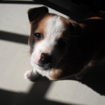
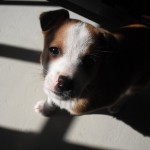

House Training,Sleeping,Training
21 October 2010 | 5 Comments
So, Roxy seemed to love Shekinah Lodge.
She came home very tired*, a bit scratched**, and very happy.
It took her a minute to come out of the Wendy house and say hello because she was so deep asleep!
She seems to have remembered all the basic level training from “before,” but is struggling a bit with the compound command stuff. And this morning she was just mental. “Run! I wish to Run!”
We have finally caved in to her demands and have got her a cellphone.
At least now we can check on her via SMS whenever we want.
What? We’re not mad.
It’s only a Pay As You Go!
Pffft!***
Roxy is now sleeping through night, mostly.
The problem is that rest of The Zoo sets her off.
Sproing likes to “Start Some Shit” or “Set It Off” an hour or half an hour before actual waking up time, and tis wakes up Roxy.
She tends to settle down and go back to sleep after a quick trip outside, though.
House training seems to be pretty much sorted. This is partially because we don’t give her the chance to get it wrong.
When we started getting all these free papers over the wall a while ago, we were happy because we needed them. Now they’re just mounting up in the cupboard because we’re not using them.
My spies tell me that some people read newspapers.
I am intrigued by this.
_____
* – two days. She
basically just slept for two days after she came back. I think she was playing all day long while she was there.
** – a few minor cuts and scrapes that you’d expect from all day rough and tumble on a farm with a bunch of other dogs. I don’t think she even noticed!
***- yes, this paragraph was a “joke.”
Biting,House Training,Training
30 August 2010 | Comments Off
The Roxy Socialisation Program continues apace.
We took her to a (more people than expected) braai yesterday, and she had a great time. Lots of running around and interacting with people and small people and cats (ahem).
She also enjoyed licking the braai grid (after use!) and drinking dirty sink water. As one does.
Her next set of injections are due in two weeks, then we can take her to The Outside World.
I think she is going to Love It.
Walkies will wock the casbah.

She seems to mostly have stopped chowing jeans. Or at least can be distracted / stopped with a “Sit.”
She’s still chasing the cats a bit (them running away = want to play in Roxy language), but she responds well to a “Sit!” even when faced with catversity (catversary?).
There are very few “accidents” in the house now. Instead she goes to the back door and sits there. And sometimes mews a little.
Current command list (all currently work without opening a terminal window or prefixing each one with sudo)
- Come
- Sit
- Stay
- Down
- Leave it
- Drop it
- (Go to) bed / house (kennel)
We’re pretty much still doing hand signals for all of them, but are using words for Come, Sit, Stay, Down along with then hands.
Is fun!
Roxy clever!

House Training,On Your Own Time,Photos
16 August 2010 | 2 Comments
Most recent challenge: collar.
We haz a very cute red one (photo below) that Roxy, of course, hates.
She goes into this weird epileptic-type fit once she realises she’s got it on, then flumps down somewhere and looks all depressed. Poor puppy!
We have adapted the kennel.
She’s an inside dog, so kennelling outside seems silly.
The kennel currently lives, roofless, next to the bed, with her dog bed in it.
She loves it!
After the next week or two, we’re going to put the roof back on and move the kennel into a corner.
Slowly, slowly, catch-y soft monkey. Dog. Thing.
After that, it gets a door on the front. It’s all about crating.
It seemed a bit mental to me at first, but now I’m getting the idea. Safe, quiet, place and all that.
Finally managing to find some time to read the dog training book we bought.
It’s got some good training techniques, but lots of it is wrapped in odd hippy new-age stuff.
Hmm.
Also: photos!
 



House Training,Sleeping
12 August 2010 | Comments Off
The first few nights were pretty bad.
But that was kind of expected.
She was quite whiney on her first night in the house, but got much better each night after that.
But what about the puppy, you ask? Oh, you cad!
…
Last night we only got up once to let her out (to “do her business” 1).
This was very good.
I will not discuss size, consistency, colour, shape, of bowel movements (as some parents (of animals or humans) are wont to do), but I will say that it is surprising how quickly you adapt to the everyday ickyness / grossness of it. Just this morning I was following Roxy around the garden on a toilet break (hers) while munching on an apple (mine).
Sort of related: I’m keen on starting all training early.
We’re doing sit and stay and come (erm…) stuff right now, with treats.
I do realise that it’s mostly training us (say it fast enough / at the right time and it looks like she was doing what we said – how awesome?! rofllolbbq!), but hopefully we’re laying some framework type stuff.
So far one of the hardest parts of being a puppy daddy is realising the timing. The days at home seem to last a long time. So much can happen in one day. It’s difficult to keep in mind that these training things take weeks or months to get right.
Not losing your temper is also difficult. Being tired out always makes me snappy (sorry, Jo!), and with the pupista that means being more slightly more aggressive or short tempered than I would like to be. I won’t hit Roxy, but I might pull a toy away slightly harder than I should.
I’m not angry, I’m just disappointed (in myself).
But I’ll get better.
And she’ll get better.
And Stv will make a good puppy daddy.
_______________________
1 – wees and poos. Not dealing crack cocaine. She’s a puppy, for goodness sake!
2 – Idea: remove all references to dog / puppy, drive traffic to site, see what strangers think this blog is about… [Waddayamean there was no 2? Oh, right. Sorry. You ain’t seen me- roight?]